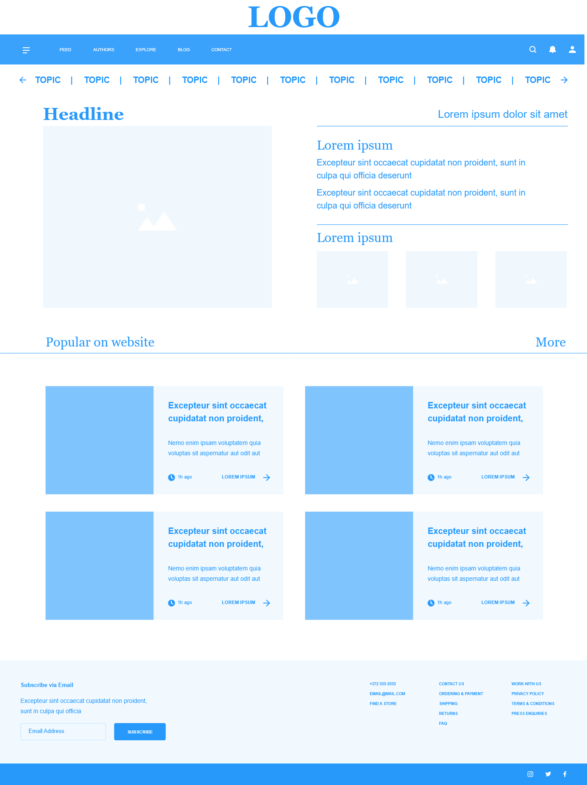

Wireframes
I have some experience creating both low- and high fidelity wireframes for websites using either Adobe Experience Design or Balsamiq.
Low Fidelity Wireframe
This is one page of a three page low fidelity wireframe I recently designed using Adobe Experience Design.
It features a wireframe for a landing page for a blog/news website with two sub pages to further flesh out the concept design.
Click here to see it in full.

High Fidelity Wireframe
This is a high fidelity wireframe designed for a clothing store.
It also includes a low fidelity version under the details.
Click here to see it in full.